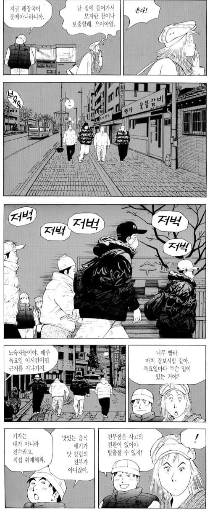
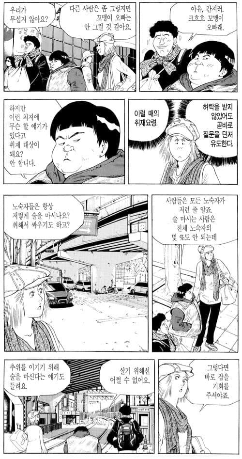
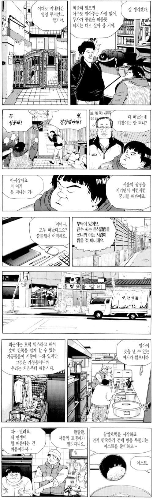
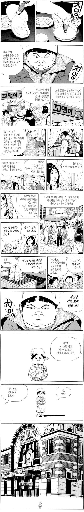
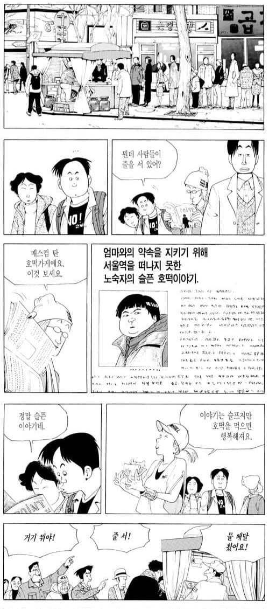
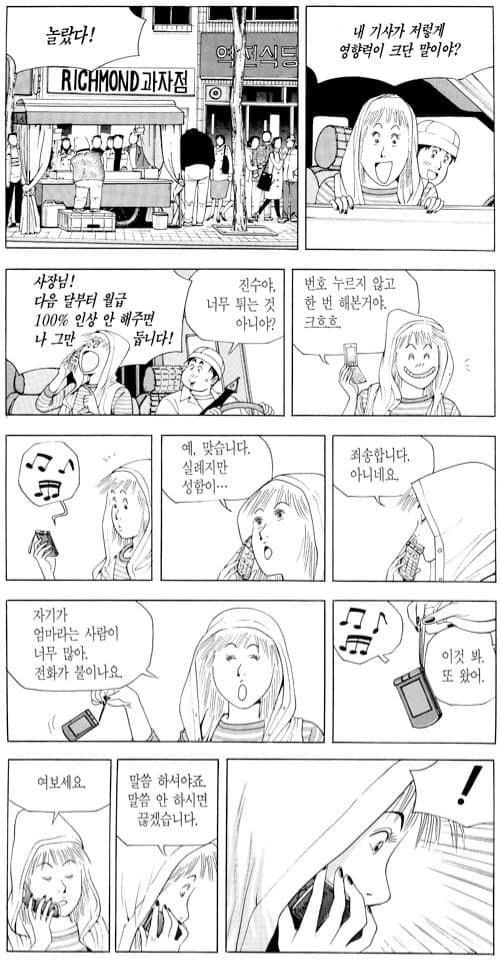
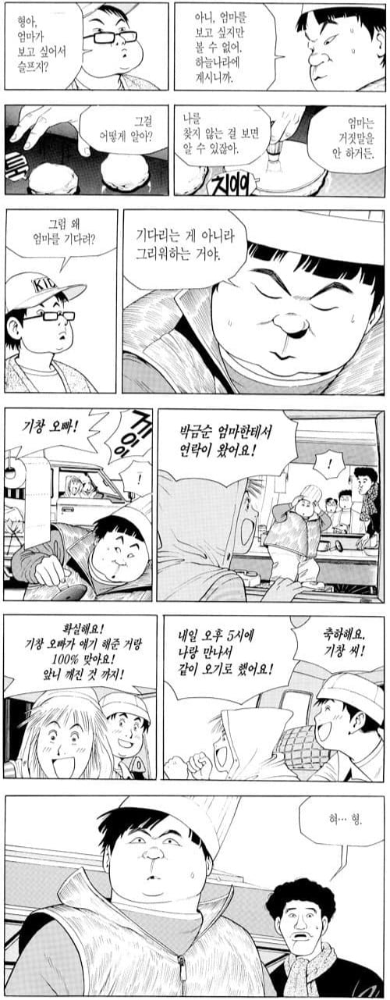
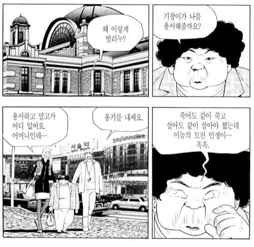
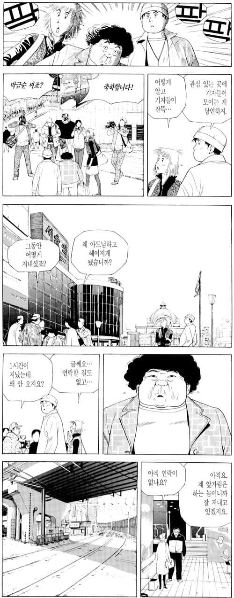
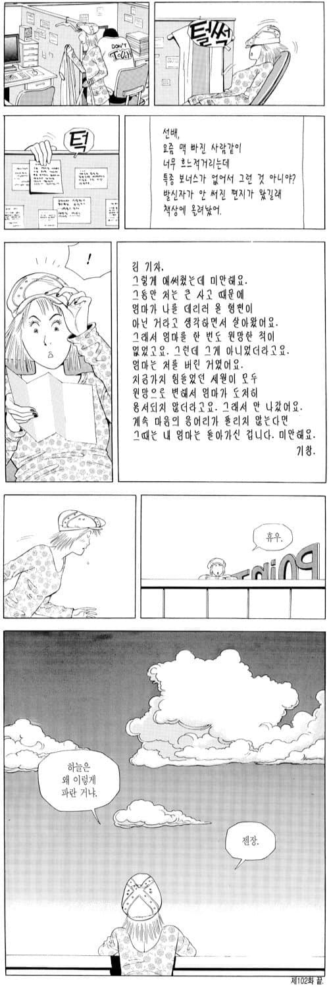

진수는 성찬의 조언에 따라 색다른 기사를 쓰기 위해
노숙자에 대한 칼럼을 쓰게되고

서울역 노숙자 이기창에게 취재를 요청한다

이기창은 진수에 도움으로
성찬에게 호떡을 배우고 장사를 시작하고


진수의 기사로 호떡 장사는 대박이 난다


그리고 정말 기창의 어머니에게 연락이 온다


하지만 기창은 나오지 않고

서울역 꼬맹이의 이야기는 거의 다 실화라고 한다.

ㅠㅠ